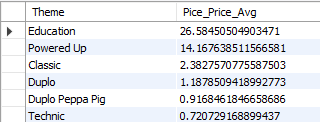
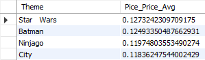
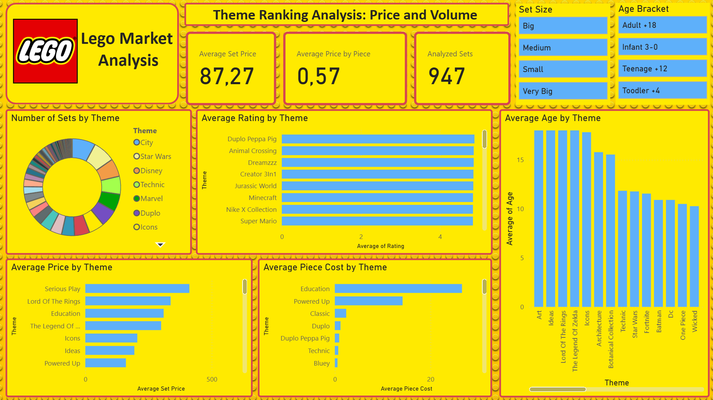
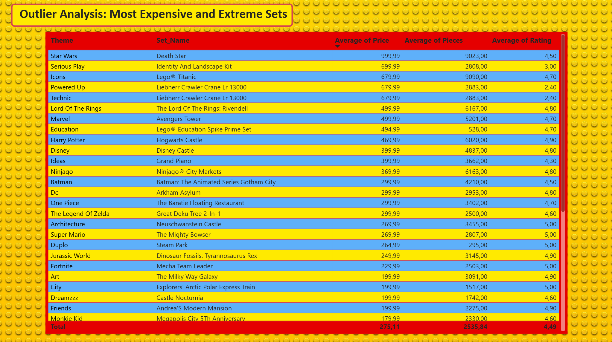

Lego Themes Analysis
Lego themes and prices analysis using Python, SQL and Power BI
Have you ever wondered which Lego Theme boasts the most sets, or which theme consistently features the biggest and most complex builds? I did, and that curiosity motivated me to conduct this comprehensive data analysis.
To achieve this, I first compiled a dataset containing every currently available Lego set from the official LegoShop website. The goal was to transform this raw data into actionable insights that I will be sharing throughout this portfolio.
This project demonstrates my end-to-end data skills, utilizing Python for data collection and cleaning, SQL for complex analytical queriess and PowerBI for visualization and presentation of the final findings and conclusions.
Python
The initial phase of this project involved Web Scraping the official Lego Shop website. This task presented an interesting technical challenge due to the site's architecture.
Unlike typical static websites, the Lego Shop is built using React, employing client-side rendering. Consequently, a standard requests library call, as used in previous analyses, only retrieved the initial HTML skeleton, failing to capture the dynamically loaded set data. To overcome this, I used Selenium. By simulating a user's browser environment, Selenium allowed me to open the target webpage and wait for the full content to be rendered before extracting the complete and generated HTML. This technique was essential for accessing the accurate dataset.
Using this method, I successfully implemented a robust collection loop, I iterated through every theme listed on the main themes-page.
Within each theme, I navigated and looped through every pagination page, systematically collecting the required data points for every available set: Theme, Set Name, Age Rate, Number of Pieces, Rating and Price.
def getThemeData(theme_link):
#Create the theme page URL
theme_url = base_url + theme_link
#Load theme´s main page
soup = loadPage(theme_url)
#Get every set from the main page
set_index = getSetsData(soup, 0)
#Get every theme´s page link
pages = soup.find('div', class_='Paginationstyles__PageLinks-sc-16f0qal-6 dDoDHg')
#Check if the theme has more than 1 page
if pages:
for page in pages.find_all('a')[1:]:
#Get the new page link
theme_url = base_url + page['href']
#Load the new page
soup = loadPage(theme_url)
#Get every set from the new page
set_index = getSetsData(soup, set_index)
else:
print(f"There is only 1 page for this theme({theme_title})")
return set_index
def getSetsData(loaded_page, current_index):
#Get sets table from the loaded page
sets = loaded_page.find("ul", id="product-listing-grid")
#Loop through every element in the table
for theme_set in sets.find_all("li", class_="Grid_grid-item__Dguxr"):
current_set_data = [None, None, None, None, None, None]
#Get set´s title
current_set_data[0] = theme_title #Set in data_list
title = theme_set.find("span", class_="markup")
if title:
current_set_data[1] = title.get_text(strip=True) #Set in data_list
#Get stats (Age, Pieces, Rating)
stats = theme_set.find("div", class_="ProductLeaf_attributesRow__jVFRa")
if stats:
stat_index = 2
for stat in stats.find_all("span"):
text = stat.get_text(strip=True)
if not text:
continue
if any(char.isdigit() for char in text):
current_set_data[stat_index] = text #Set in data_list
stat_index += 1
#Get the price
price_block = theme_set.find("div", class_ = 'ProductLeaf_priceRow__kwpxi')
if price_block:
price_text = price_block.find("span")
if price_text:
current_set_data[5] = price_text.get_text(strip=True) #Set in data_list
if current_set_data[1] is not None and current_set_data[5] is not None:
df.loc[current_index + data_frame_index] = current_set_data
current_index += 1
return current_index
Once the raw dataset was compiled, the next crucial step was cleaning and transforming the data to ensure accuracy and relevance for SQL querying and PowerBI visualization. Although the initial data was relatively clean, several adjustments were necessary:
-
Text Cleanup: I removed redundant branding elements such as "Lego", "®" and "™" from the Theme and Set Name columns to focus solely on the product identifier.
df["Theme"] = df["Theme"].str.replace("®", "", regex=False) df["Theme"] = df["Theme"].str.replace("™", "", regex=False) df["Theme"] = df["Theme"].str.replace("LEGO", "", regex=False) df["Theme"] = df["Theme"].str.strip() -
Type Conversion: Critical columns like Price and Number of Pieces were converted from strings
text (strings)intowhole numbers (integers)to enable mathematical aggregation and analysis in SQL.df["Price"] = df["Price"].str.replace("€", "", regex=False) df["Price"] = df["Price"].str.replace(",", ".", regex=False) df["Price"] = df["Price"].astype(float) -
Age Standardization: The Age Rate column contained mixed values
(e.g., "7+", "4+", "6-12"). I standardized this by extracting only the minimum age(e.g., converting "7+" to 7, and "6-12" to 6)and converting these to whole numbers. This allowed the data to be properly used for calculating the Average Age per theme.df["Age"] = df["Age"].str.replace("+", "", regex=False) df["Age"] = df["Age"].str.replace("½", "", regex=False) df["Age"] = df["Age"].str.replace("6-12", "6", regex=False) df["Age"] = df["Age"].str.replace("4-99", "4", regex=False) df["Age"] = df["Age"].str.replace("7-12", "7", regex=False) df["Age"] = df["Age"].str.replace("2-6", "2", regex=False) df["Age"] = df["Age"].str.replace("3-5", "3", regex=False) df["Age"] = df["Age"].str.replace("5-12", "5", regex=False)
SQL
Having cleaned and structured the data, the next critical step was leveraging SQL to perform complex aggregations and answer the core questions of the analysis. This phase allowed me to challenge initial assumptions about Lego pricing, volume, and audience targeting.
Which Theme has the highest price per piece (PPP)?
I initially hypothesized that themes with licensing fees, such as Star Wars or The Lord of the Rings, would dominate. However, the initial results pointed to Education and Powered Up. This high PPP was due to the inclusion of expensive, low-piece elements like batteries and electronic components, where a single 'piece' could cost around €35.

To refine the analysis, I implemented a filter to exclude all sets with less than two pieces. This correction revealed a new leader: Duplo. The probable reason lies in the uniqueness and size of Duplo pieces, which are large and specific to their sub-themes (Duplo, Duplo Peppa Pig), elevating the cost relative to standard brick dimensions.
While piece rarity emerged as the primary driver, I conducted a final verification to assess license impact by comparing four specific themes (Star Wars, City, Batman, and Ninjago). I found that Star Wars and Batman were noticeably more expensive per piece than City and Ninjago. This suggests that while piece rarity accounts for most of the PPP variance, the licensing fee does contribute a small, yet significant, premium. Extrapolating this difference, a 2.000 pieces Star Wars set would cost approximately €250, compared to around €185 for an equivalent City set. This difference is substantial enough to influence purchasing decisions.
Which Theme boasts the most sets?
After ensuring data integrity by removing non-set items (pens, keyrings, backpacks, etc.), Lego City took the lead with 74 sets, narrowly beating Star Wars (71 sets). The third-place themes, Technic and Disney, trailed far behind with 57 sets each.
While Star Wars might have the highest total product count (if we were also counting keyrings, pens, etc.), the City theme, a beloved and long-running theme first released in 1978 that focuses on simulating real-world scenarios (police, doctors, firefighters), secures the top spot highlighting Lego's commitment to maintaining a robust and evergreen presence in the core play market.
Theme with the most expensive average set price
The query initially identified Serious Play, which is not a consumer theme but rather a specialist tool used in professional development and therapy.
After excluding this outlier, The Lord of the Rings emerged as the most expensive theme. This is unsurprising given its low volume (only 4 sets), all of which carry a high entry price (cheapest being €120). This data suggests a clear market segmentation strategy: Lego targets the affluent Adult Fan of Lego (AFOL) audience for limited, high-value themes like The Lord of the Rings, whereas broad themes like Star Wars or Batman cater to a much wider spectrum of financial situations, ranging from small sets (€15.99) to massive collector sets (€999.99).
What Themes have the highest average Age?
While there is a correlation between high price and older customers, the results showed the relationship is more nuanced. While The Lord of the Rings was predictably high, other themes like Art and Botanical Collection also topped the list, despite having moderate price points. This reveals that the set's intended functionality, not just its price or piece count, is a key determinant of the age rating.
These themes are designed for adult decoration and mindful building rather than traditional play, attracting former child builders seeking a different kind of engagement in their adult phase.
Which theme has the highest average Rating?
The query surprisingly yielded ambiguous results. The range of average ratings was narrow, spanning from a high of 4.87 to a low of 3.49, indicating overall customer satisfaction is generally high across the entire catalogue.
The top spots were unexpectedly claimed by themes focused on younger audiences, specifically Duplo: Peppa Pig and Animal Crossing. While this might suggest younger audiences are easier to satisfy, this hypothesis is immediately complicated by Duplo itself being closer to the middle of the ranking and Bluey near the bottom.
Furthermore, popular themes like Star Wars landing in the 38th position, or low-volume themes like The Lord of the Rings (37th position) being poorly rated compared to The Legend of Zelda (just 1 set for €299.99 and highly rated), shows that simple rules (like price or set count) do not dictate rating success. Themes with a wide price spectrum often attract varied expectations, potentially leading to varied ratings, yet themes like City or Ninjago rank highly despite having a broad range.
My conclusion is while there is no a clear correlation between set size or target age and rating, the data suggests that customer expectation is highly correlated with set size. Users tend to be more forgiving and rate smaller sets better, while larger, more expensive builds are subjected to much higher critical scrutiny.
To support the hypothesis regarding customer expectations, I used the Pearson Correlation Coefficient to analyze the relationship between Rating and Number of Pieces per set.The formula yields a value between 1 (perfect positive correlation) and -1 (perfect negative correlation). The result of the query was -0.31. While this indicates a weak correlation, the negative value confirms the tendency: as the number of pieces increases, the average rating tends to slightly decrease. This statistically reinforces the idea that customers are more demanding and critical when reviewing larger and more expensive sets.
WITH CorrelationData AS (
SELECT Rating AS X, (Price * 1.0) / Pieces AS Y FROM setstable
WHERE Price IS NOT NULL AND Pieces > 0 AND Rating IS NOT NULL
)
SELECT
SUM((T.X - T_AVG.Avg_X) * (T.Y - T_AVG.Avg_Y)) /
(
COUNT(T.X) * STDDEV_POP(T.X) * STDDEV_POP(T.Y)
) AS Coefficient_Correlation_R
FROM CorrelationData T
CROSS JOIN (SELECT AVG(X) AS Avg_X, AVG(Y) AS Avg_Y FROM CorrelationData) AS T_AVG;
#Coefficient = -0.3 -> There is no particular correlation
What is the average number of pieces per Theme?
The question aimed to determine the typical set size within each line. The Lord of the Rings unsurprisingly led the list due to its low volume of high-piece sets. However, the analysis provides deeper insights into broader themes:
- High-End Targeting: Themes like Star Wars and Batman, despite featuring massive sets (>4,000 pieces), maintain an average piece count around 1,100. This demonstrates a dual client strategy: serving both the young fan who wants a smaller, affordable model and the adult collector who demands large display pieces.
- Core Audience Focus: Conversely, City and Marvel maintain a low average piece count (around 550), indicating a primary focus on younger audiences and play value. This is further proven by themes at the bottom of the list, such as Duplo and Bluey.
Theme with the highest standard deviation (variance) in price
This variance is the best indicator of a theme attempting to appeal to the widest possible range of target audiences.
The query successfully demonstrated that Star Wars is the theme with the widest price variation (from €9.99 to €999.99), closely followed by Batman. This confirms their broad strategy targeting both children (low price) and collectors (high price).
Surprisingly, Marvel and Ninjago also ranked high. Although they are primarily aimed at younger audiences with low average prices, they both feature particular and highly expensive sets for older clients (up to €499.99 and €369, respectively).
Conversely, themes at the bottom of the table, like TLOR and Duplo: Peppa Pig, have very low price variance. This confirms that these themes successfully target a very specific audience: adults with disposable income (TLOR) or infants (Duplo), with little deviation from that price strategy.
With the completion of these queries, the SQL analysis phase is concluded. Each query yielded unique, interesting and relevant insights that challenge initial assumptions. The next step is to transition this validated and enriched data into PowerBI to create the visualizations necessary for easier comprehension.
Power BI
The final stage of the project involved transitioning the validated and enriched dataset into PowerBI to create a compelling and interactive narrative. The goal of this phase was to visualize the complex relationships discovered during the SQL analysis, making the data accessible and actionable.
Dashboard Design and Structure
The analysis was organized into three distinct pages, each focused on a specific analytical objective:
- Market Ranking: This primary dashboard immediately highlighted the themes dominating the market in terms of volume (sets) and efficiency (Price per Piece). KPI cards were used at the top to establish the baseline Average Price per Piece and Total Set Count. Horizontal bar charts visually demonstrated the competitive rankings, quickly revealing Education’s high PPP and City’s volume leadership. 
-
Volatility and Correlation: This advanced page focused on the nuance in the data. The Scatter Plot was the most important chart of the page, visualizing the correlation between Average Rating and Average Set Price . This plot clearly showed themes clustering in the 'high-premium' quadrant (e.g., The Lord of the Rings), statistically supporting the -0.31 standard deviation coefficient finding that customers are more critical of expensive sets. Crucially, a Coefficient of Variation (CV) table was used to clearly identify Star Wars as the theme with the highest price volatility, demonstrating its strategy of targeting multiple financial segments.

- Extreme Sets: A dedicated detail page was created to provide context for the outliers driving the high price averages and standard deviations. This table was filtered to show the most expensive set in each theme allowed stakeholders to see the exact product names and specifications responsible for the analyzed trends. 
Final Conclusions
This concludes the comprehensive Lego Data Analysis. Looking back, this project proved to be invaluable for two distinct, yet complementary, reasons:
- Professional Development: As an aspiring Data Analyst, the project provided a crucial end-to-end practical application of my technical stack. By leveraging Python/Selenium to overcome sophisticated web architecture challenges, utilizing SQL for rigorous statistical verification and deploying PowerBI for dynamic reporting, I significantly advanced my skills in generating, validating and communicating data-driven conclusions.
- Subject Matter Insight: On a personal level, as an avid Lego enthusiast, the analysis was profoundly revealing. I now possess a deeper and data-backed understanding of the company’s market strategies including: why certain themes command a higher price-per-piece, the role of licensing fees versus piece rarity and how sets are strategically priced and aged to target specific audience segments.